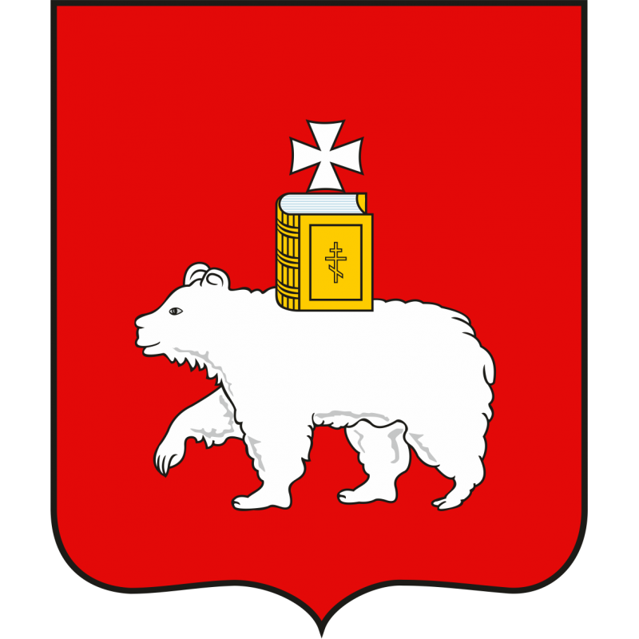

ДОСУГОВЫЕ ОРГАНИЗАЦИИ ПЕРМИ

Выбрать категорию
видов деятельности
Здоровье
Спорт
Культура
Обучение и развитие
Творчество
Танцы и вокал
Снять выбор
Досуговые организации
Кликните по значку организации на карте, чтобы узнать подробную информацию.
Информация о досуговой организации
Закрыть
⊕ Добавить организацию на карту
▲ Показать легенду ▲
▼ Скрыть легенду ▼
▲ Показать список слоев ▲
▼ Скрыть список слоев ▼